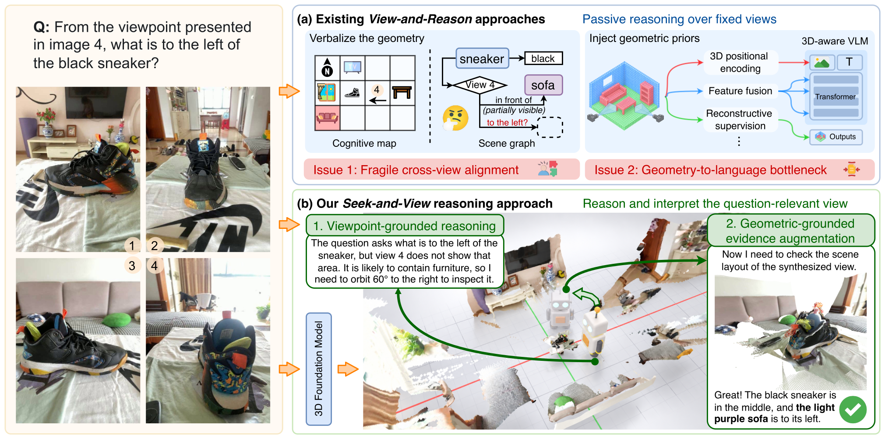
(a) Existing approaches reason over fixed views, suffering from fragile cross-view alignment and the geometry-to-language bottleneck. (b) Our novel Seek-and-View reasoning paradigm seeks a question-relevant view to make the spatial evidence directly observable.
Existing multi-view spatial reasoning remains constrained by sparse and fixed viewpoints. Consequently, vision-language models (VLMs) must infer spatial relations solely from these fixed views, leading to fragile cross-view alignment and a geometry-to-language bottleneck. To overcome these issues, we formulate a novel Seek-and-View reasoning paradigm that seeks a viewpoint to make the queried spatial relation directly observable and interprets the sought view to support the spatial reasoning. Building on this paradigm, we propose Vantage, a training-free and model-agnostic framework that structures VLM reasoning for viewpoint planning and evidence-augmented spatial understanding, with a 3D foundation model supporting view synthesis. Specifically, we develop a viewpoint-grounded reasoning stage that translates spatial queries into targeted viewpoint plans. A subsequent geometry-grounded evidence augmentation stage synthesizes new views and incorporates visual evidence alongside preceding reasoning contexts for final answering. Together, these stages reduce reliance on language-based cross-view alignment. Extensive experiments on six VLMs across six benchmarks show consistent improvements in overall accuracy, with an average absolute gain of 8.2% without fine-tuning.
Strong semantic and contextual reasoning ability does not inherently enforce the structured, globally consistent geometric constraints required across views, leaving the alignment implicit and error-prone.
Upon compressing the spatial geometry into discrete semantic descriptions, the reasoning would potentially overlook fine-grained spatial information.
Reasoning stays passive over the fixed, sparse observations.
Reasoning seeks a question-relevant view that makes the spatial evidence directly observable.
Humans can conceptualize the 3D structure of a scene and seek a vantage viewpoint that resolves the spatial relation. Vantage gives a VLM the same option.
Vantage is a training-free and model-agnostic framework that realizes Seek-and-View through viewpoint-grounded reasoning and geometry-grounded evidence augmentation. It structures VLM reasoning to plan question-relevant viewpoints and interpret the resulting visual evidence, with a 3D foundation model supporting view synthesis.
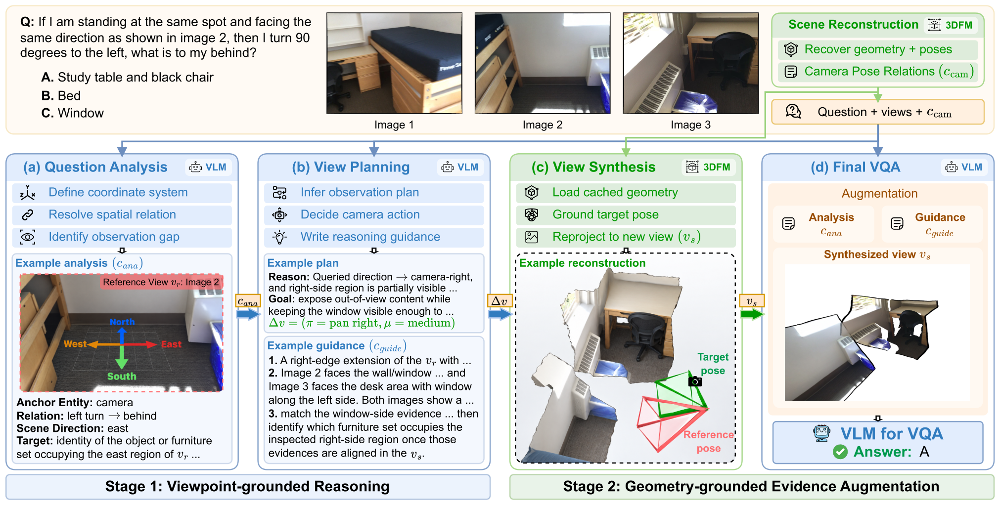
The VLM analyzes the question and identifies the spatial evidence needed. It selects a reference view, plans a relative camera action from 17 predefined motions with three magnitude levels, and generates reasoning guidance for examining the sought view.
The backend converts the semantic action into an executable pose transformation in a gravity-aligned frame and synthesizes the requested view. Final VQA combines this view with the input observations, camera pose relations, question analysis, and reasoning guidance.
Across six benchmarks and six VLMs of varying scales, Vantage improves overall accuracy for every model, with an average absolute gain of 8.2% without fine-tuning.
Overall accuracy (%) across six benchmarks. Values in parentheses indicate absolute gains over the base model (%).
| Model | MindCube-tiny | MMSI-Bench | SPAR-Bench | BLINK Multi-view | OmniSpatial Perspective | SPINBench | Overall | Δ (%) |
|---|---|---|---|---|---|---|---|---|
| Training-scaled spatial model | ||||||||
| SenseNova-SI-1.5-InternVL3-8B | 93.2 | 45.2 | 51.2 | 63.9 | 52.0 | 43.0 | 58.2 | — |
| Model-scaled spatial agent | ||||||||
| GCA (Qwen3-VL-235B-A22B-Thinking) | 64.2 | 51.2 | — | — | 58.6 | — | — | — |
| Comparison on shared VLM backbones | ||||||||
| Qwen3-VL-4B | 26.0 | 27.9 | 40.0 | 41.4 | 41.9 | 53.2 | 37.3 | — |
| + pySpatial | 49.8 | 28.4 | 40.4 | 0.0* | 45.1 | 46.6 | 40.8 | +3.5 |
| + Think3D | 28.5 | 28.7 | 38.0 | 43.6 | 41.2 | 42.8 | 35.9 | -1.4 |
| + Vantage | 49.0 | 32.2 | 43.2 | 64.7 | 44.7 | 52.3 | 44.4 | +7.1 |
| Qwen3-VL-8B | 31.3 | 29.9 | 43.4 | 44.4 | 43.0 | 56.6 | 40.6 | — |
| + pySpatial | 53.5 | 20.4 | 37.0 | 91.7 | 43.5 | 47.2 | 41.0 | +0.4 |
| + Think3D | 35.5 | 28.4 | 42.6 | 55.6 | 40.1 | 54.6 | 40.7 | +0.1 |
| + Vantage | 46.0 | 33.3 | 44.3 | 74.4 | 40.5 | 52.8 | 44.4 | +3.8 |
| InternVL3-8B | 36.8 | 28.4 | 41.9 | 53.4 | 44.0 | 48.9 | 40.4 | — |
| + pySpatial | 52.1 | 27.3 | 35.5 | 68.4 | 45.5 | 50.3 | 40.7 | +0.3 |
| + Think3D | 43.8 | 25.9 | 38.4 | 24.8 | 43.1 | 48.5 | 39.0 | -1.4 |
| + Vantage | 48.9 | 30.2 | 39.1 | 74.4 | 41.0 | 52.5 | 42.2 | +1.8 |
| Qwen3.6-27B | 63.0 | 42.8 | 59.3 | 26.3 | 52.6 | 89.2 | 59.2 | — |
| + pySpatial | 61.3 | 35.9 | 47.9 | 98.5 | 48.0 | 59.9 | 51.3 | -7.9 |
| + Think3D | 64.6 | 39.9 | 56.5 | 51.1 | 53.1 | 65.0 | 56.3 | -2.9 |
| + Vantage | 85.5 | 53.1 | 69.3 | 91.0 | 68.6 | 91.6 | 73.0 | +13.8 |
| Gemma-4-31B | 53.5 | 36.8 | 49.7 | 36.1 | 51.7 | 71.1 | 50.4 | — |
| + pySpatial | 54.9 | 33.7 | 47.0 | 100.0 | 46.9 | 47.0 | 47.9 | -2.5 |
| + Think3D | 60.7 | 38.0 | 60.3 | 39.1 | 57.6 | 73.7 | 58.0 | +7.6 |
| + Vantage | 76.1 | 42.2 | 57.2 | 100.0 | 56.1 | 70.3 | 61.0 | +10.6 |
| GPT-5.4 | 44.2 | 34.4 | 49.0 | 48.1 | 47.4 | 59.3 | 47.0 | — |
| + Vantage | 72.8 | 38.5 | 59.1 | 75.2 | 49.0 | 63.9 | 59.0 | +12.0 |
Accuracy (%) on the evaluated benchmark subsets. Overall follows the aggregation reported in the paper, and Δ denotes absolute gains (%).
The evaluation comprises 5,496 questions. The four primary multi-view benchmarks are MindCube-tiny, MMSI-Bench, SPAR-Bench, and BLINK. OmniSpatial additionally examines single-view perspective taking, while SPINBench evaluates object-motion reasoning against a static background scene. GCA results are quoted from its original paper. pySpatial and Think3D are evaluated on the five shared open VLM backbones. * Failed to reach a final answer.
We present qualitative examples of Vantage with GPT-5.4. Questions and camera pose relations are excerpted, and intermediate outputs are summarized for clarity. Each example includes the base model response using only the input views.
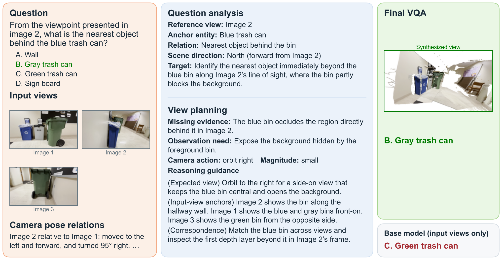
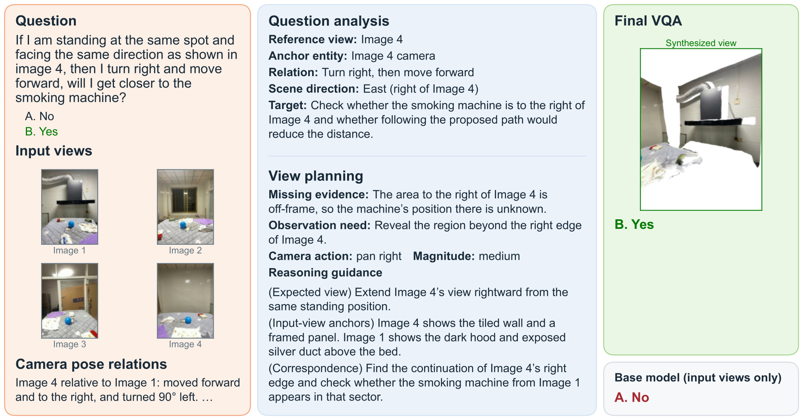
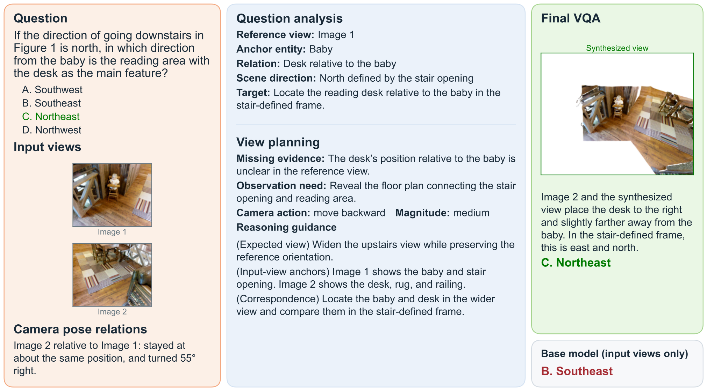
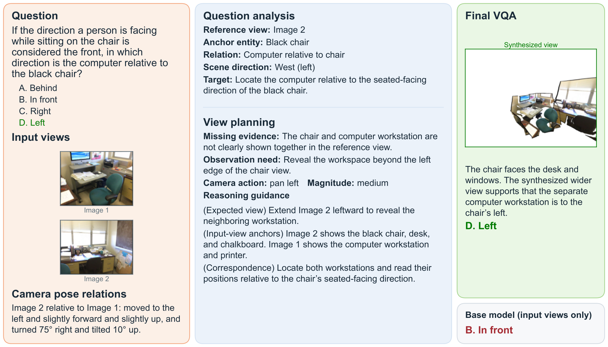
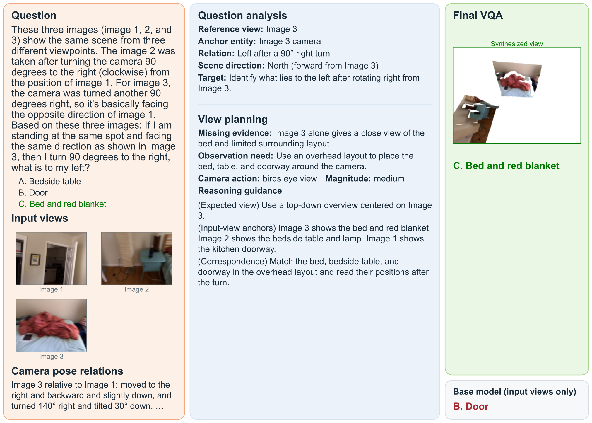
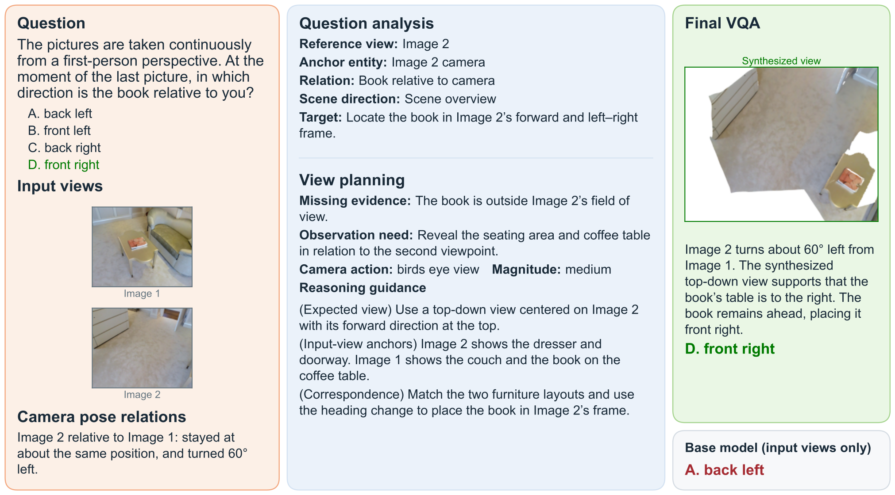
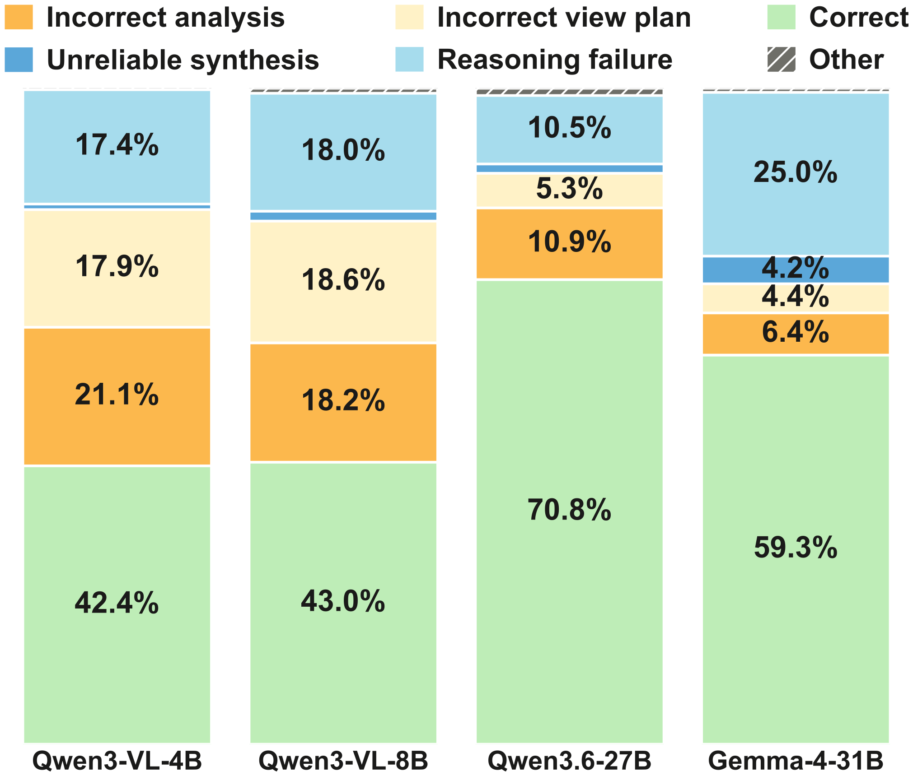
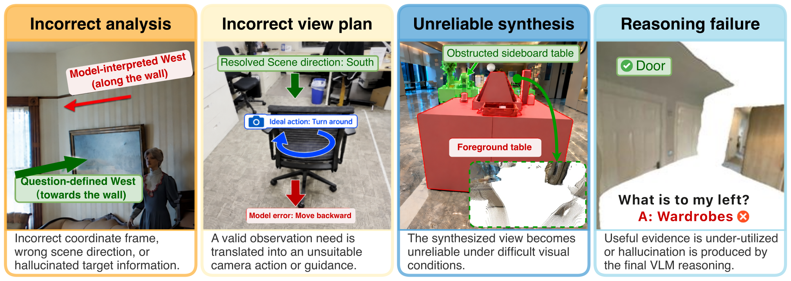
Left Macro-averaged failure analysis. Right Representative failure cases by type.
We audit 1,200 incorrect predictions across four models and three multi-view benchmarks. When multiple errors occur, the first error in pipeline order determines the primary failure category. For smaller VLMs, incorrect analysis and incorrect view plan account for a substantial portion of failures, highlighting the difficulty of identifying the needed spatial evidence and translating it into an appropriate camera action. Unreliable synthesis is rare in the audited failures and mainly occurs under challenging visual conditions, suggesting that Seek-and-View can tolerate imperfect rendering when sufficient visual evidence is preserved. Reasoning failure occurs when the VLM under-utilizes useful evidence in the sought view or produces an inconsistent reasoning trace. Acquiring an informative view alone therefore does not guarantee a correct answer.
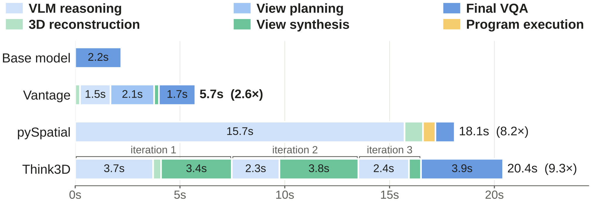
Inference time is averaged over 600 questions evenly sampled from six benchmarks, using Qwen3-VL-4B on a single H200 GPU.
If you find this work interesting or relevant to your research, please consider citing our paper 😊
@misc{chen2026seekandviewreasoningmultiviewspatial,
title={Seek-and-View Reasoning for Multi-View Spatial Understanding},
author={Qixiang Chen and Cheng Zhang and Fucai Ke and Chi-Wing Fu and Jianfei Cai and Jingwen Ye},
year={2026},
eprint={2610.11810},
archivePrefix={arXiv},
primaryClass={cs.CV},
url={https://arxiv.org/abs/2610.11810},
}